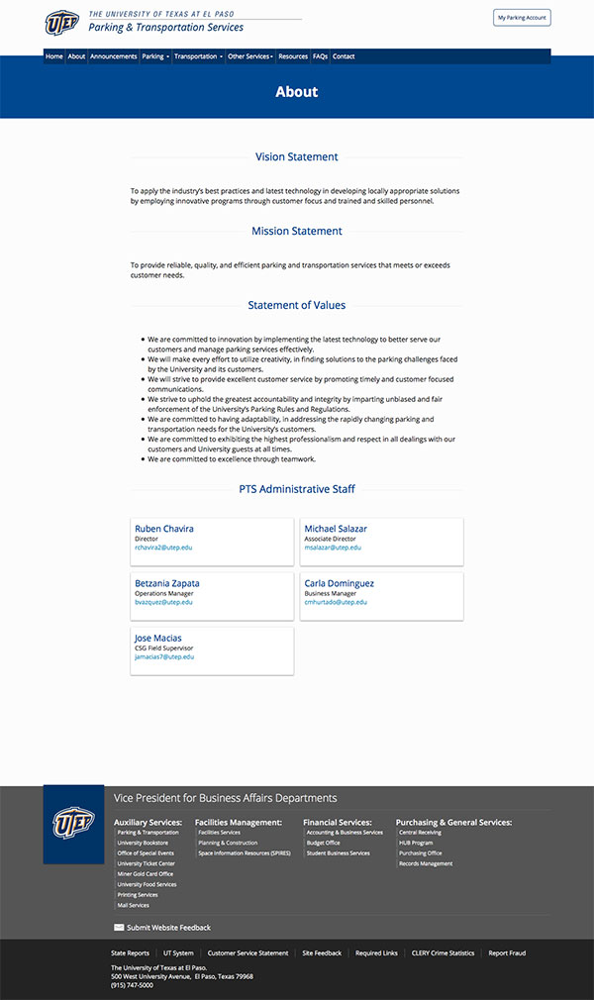
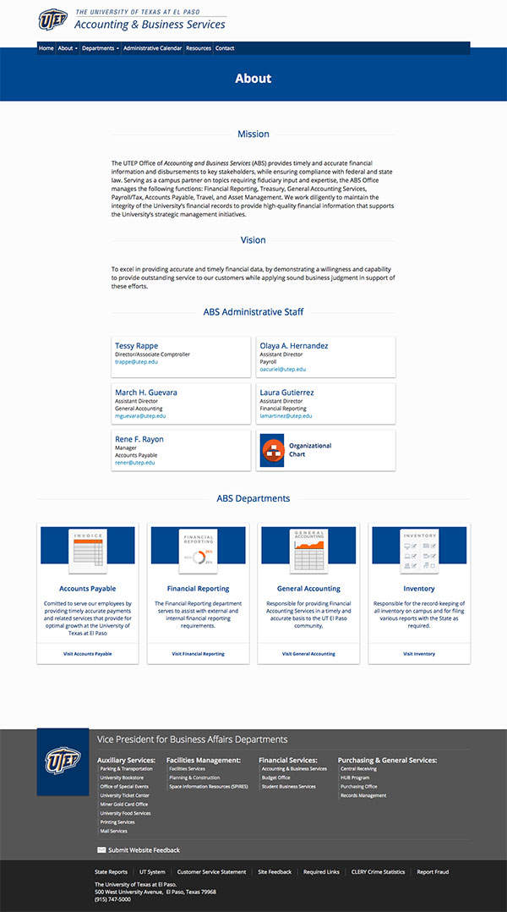
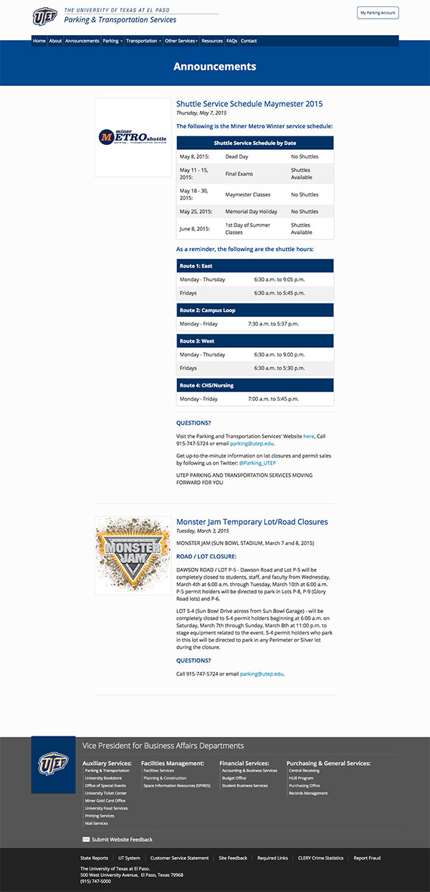

Based on our experience, the following templates are the most useful when creating our websites. These templates allowed us to standardize the User Experience throughout our websites, reduce the implementation time, and to focus on the content rather than development.
The following is the main structure followed by our HomePages:
PeopleSoft
Parking & Transportation Services
Travel
The following is the main structure followed by our "About Us" pages:
Parking & Transportation Services > About Us
 About Us" title="Parking & Transportation Services > About Us" class="pictureFrame">
Accounting & Business Services > About Us
 About Us" title="Accounting & Business Services > About Us" class="pictureFrame">
A “Left Sidebar Navigation” is an common “User Interface Pattern”. This can be used to navigate between pages under the same section, or between sections under the same page.
Payroll Services
Accounting & Business Services > Accounts Payable Page
The “Right Sidebar” Layout can be used to add secondary content. In the examples shown below we use the Right Sidebar for the download buttons.
Payroll FAQs
VPBA Business Process Guidelines > Post Payment Audit
This page can be used to publish announcements.
Parking & Transportation Services > Announcements
 Announcements" title="Parking & Transportation Services > Announcements" class="pictureFrame">
Basic template used for FAQs pages. It uses a jQuery accordion, which expands/collapses as needed.
Payroll FAQs
Parking & Transportation Services FAQs
Our departments have links, forms, and documents that are relevant to their audiences. In the “Resources” page we consolidate the most important links, documents, and forms. We use lists with iconography to identify the type of links.
Accounting & Business Services Resources
Parking & Transportation Services Resources
Our departments have links, forms, and documents that are relevant to their audiences. In the “Resources” page we consolidate the most important links, documents, and forms. We use lists with iconography to identify the type of links.
PTS Contact Us
Payroll Contact Us